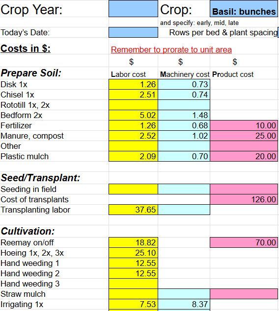

Overview
Farm business management connects production decisions with finances, marketing, labor, and personal goals. A successful plan must support both the farm's operations and the people doing the work.
Start with Values and Goals
Farming requires a major commitment of time, money, and energy. Before planning production, define what you want the farm to provide and what you are willing to commit.
Questions to Ask
- What are the farm's mission and vision?
- What values should guide business decisions?
- What income does the owner need?
- What workload and lifestyle are sustainable?
- Does the owner want to work alone or manage a team?
- Which tasks should be done in-house or outsourced?
Examples include deciding whether to make or buy compost, hire a graphic designer, or invest in equipment that reduces labor.
Components of a Farm Business Plan
- Financial plan
- Estimate revenue, input costs, supplies, equipment, infrastructure, and financing needs.
- Marketing and communications plan
- Identify customers, sales channels, business values, and how the farm will communicate its products and goals.
- Production plan
- Determine crops, planting quantities, growing space, harvest schedules, wash-pack needs, and food-safety practices.
- Labor plan
- Identify who will do the work, when labor is needed, and how workers and the owner will be compensated.
Where to Begin
- Define values, mission, and income goals.
- Identify likely customers and sales channels.
- Estimate production capacity and labor needs.
- Build realistic cost and revenue estimates.
- Check whether the plan supports cash flow and workload.
Market and Sales Channels
Farmers Markets and Direct Sales
Benefits
- Direct relationships with customers
- Opportunity to retain more of the final selling price
- Farmers markets can offer a relatively accessible entry point
Trade-offs
- Significant time for selling and customer service
- Transportation, setup, and market fees
- Uncertain sales and possible unsold produce
Wholesale
Potential buyers include grocery stores, restaurants, and other businesses.
Benefits
- Potential for larger, recurring orders
- May reduce selling time per unit of produce
Trade-offs
- Often lower prices than direct retail sales
- Requirements for consistent quantity, quality, packaging, and delivery
- Payment terms can affect cash flow
Community Supported Agriculture
Community Supported Agriculture (CSA) is a subscription or membership model in which customers receive regular farm products.
Benefits
- Upfront payments can support early-season expenses
- Builds ongoing customer relationships
- Some models share production risks and benefits with members
Trade-offs
- Pressure to deliver consistent shares
- Requires crop diversity and careful scheduling
- Requires communication and distribution planning
Pricing Products
Two useful perspectives are the cost of producing the product and the price customers are willing to pay. A pricing decision should consider both.
- Cost-based pricing
- Calculate production, harvest, packing, selling, and delivery costs, then evaluate the price needed to support owner compensation and profit.
- Market-based pricing
- Compare prices for similar products in the intended sales channel, accounting for quality, presentation, season, and customer preferences.
Evaluating a Wholesale Opportunity
- Can the farm reliably supply the requested quantity?
- Does the price cover growing, harvesting, packaging, delivery, and labor?
- What are the buyer's quality standards and payment terms?
- Would another sales channel provide a better return?
- Does the crop fit the farmer's interests and capacity?
- Is the order using existing surplus or requiring additional production?
Selling surplus may be worthwhile if the sale covers additional costs and does not displace a better opportunity. Committing to new production requires a fuller assessment.
Profit and Profitability
Profit = Revenue − Expenses
Profit helps support the farm's continuity, investment, and financial resilience. Be clear about which expenses are included when comparing profit figures.
Ways to Improve Profitability
- Compare crops by return per unit of space, time, and labor—not only total sales.
- Reduce waste and unnecessary costs without compromising quality or food safety.
- Trial varieties that interest customers and fit the farm's production system.
- Present products neatly and attractively.
- Consider product presentation, such as selling carrots with tops when customers value that format.
- Account for the extra labor and handling involved in value-adding practices.
Cash Flow and Seasonal Expenses
Cash flow is the movement of money into and out of the business. It determines whether the farm has enough cash available to pay expenses when they are due.
A farm can be profitable over a year but still run short of cash during a period of high expenses and low sales. For example, planting costs may arrive well before harvest revenue.
Planning for Cash Needs
- List monthly payments for labor, land, equipment, supplies, and debt.
- Estimate when revenue will arrive.
- Identify months with a likely cash shortfall.
- Consider reserves, upfront customer payments, or appropriate financing.
- Include interest and repayment obligations when evaluating operating loans.
Farm Scale and Financial Returns
Expanding a farm can increase total production and gross revenue, but it can also increase equipment, labor, infrastructure, and management costs.
- A smaller farm may maintain low overhead and intensive management.
- A larger farm may gain efficiencies but require substantial new investment.
- More sales do not automatically mean more profit.
- Profit margins vary by crops, sales channels, labor accounting, and management.
Compare both total net income and the return on the owner's time before deciding to expand.
Enterprise Budgets
An enterprise budget estimates the revenue and costs associated with one crop or business activity. It helps compare options and evaluate whether an enterprise is financially worthwhile.
Information Needed
- Growing area and production period
- Expected marketable yield
- Expected selling price and sales channel
- Seed, fertility, irrigation, and other input costs
- Planting, cultivation, and harvesting labor
- Packaging, selling, and delivery costs
- An appropriate share of equipment and overhead costs
Using the Budget
- Estimate revenue and costs before planting.
- Test different yield, price, and cost scenarios.
- Record actual results during the season.
- Compare estimates with results and update the plan.

Labor and Owner Compensation
Farm owners may perform the work themselves, hire workers, or combine owner labor with a team.
Labor-Planning Questions
- Who is the primary laborer?
- Which tasks require additional workers?
- When will labor demand be highest?
- What training and supervision are needed?
- Are workers commuting or living on-site, and what responsibilities does that arrangement involve?
Accounting for the Owner's Work
Include the value of owner labor when evaluating whether the business can provide a sustainable livelihood. The form of owner compensation depends on the business structure and accounting arrangements; it is not always a salary.
- Set a realistic owner-income goal.
- Track owner hours as well as employee hours.
- Estimate the sales and margins needed to support that income.
- Separate personal finances from business finances and document compensation.
Sources and Supporting Materials
- Lecture 8
- The Market Gardener by Jean-Martin Fortier. Chapter 1,2,3,4 p. 1-40
- Organic Farmer’s Business Handbook by Richard Wiswall Chapters 1,4,5 and Appendix